14:30ICN인천국제공항
✈
1h 45m16:15TAK다카마쓰 공항
2026. 08. 24 월요일
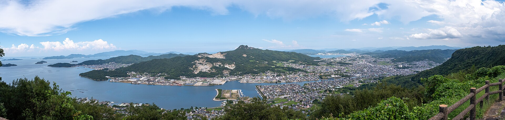
Takamatsu from Yashima · Photo: Photos of Japan (CC0), Wikimedia CommonsKAGAWA · JAPAN / SUMMER 2026
이른 아침 정원에서 평지 관광까지, 우동 한 그릇에서 노을까지.
쿠폰북과 함께 알차게 누리는 세토내해 3박 4일.
멤버 : 동인, 민성, 승원, 경준
TRIP OVERVIEW · LATE AUGUST
8월 말 다카마쓰는 여전히 한여름입니다. 다만 세토내해의 맑은 풍경과 늦은 저녁까지 이어지는 긴 하루 덕분에, 속도만 조금 늦추면 정원·평지 관광과 구라시키 당일치기까지 충분히 즐길 수 있어요.
TRAVEL VERDICT
정확한 8월 24–27일 예보는 출발 7–10일 전에 확인해야 합니다. 지금은 작년 같은 날짜의 실제 기록을 보수적으로 참고해, 오전 7–11시와 오후 4시 이후를 야외 핵심 시간으로 잡고 12–15시는 식사·카페·이동에 쓰는 편이 안전해요.
실내 냉방용 가벼운 셔츠도 한 장
그늘이 적은 정원·거리에서는 필수
접이식 우산과 방수 파우치 준비
구라시키행 열차 운행 공지를 출발 전 점검
LAST YEAR · OBSERVED, NOT FORECAST
2025년 8월 24–27일 다카마쓰는 나흘 평균기온이 30.7°C, 낮 최고기온 평균이 35.3°C였습니다. 네 날 모두 비다운 비가 기록되지 않아 이동은 수월했지만, 아침 최저도 평균 27.4°C로 밤까지 더위가 이어졌어요.
일본 기상청 실제 관측표 ↗8월 26일 구라시키 당일치기도 폭염 기준으로 배치 · 오전 11시 전 미관지구 야외 산책 · 12–15시는 냉방이 되는 열차·오하라미술관 실내 관람 · 이동 중 물을 미리 보충하세요.
FLIGHT PLAN
2026. 08. 24 월요일
2026. 08. 27 목요일
FIRST STOP AT TAKAMATSU AIRPORT
입국장을 나오면 1층 관광안내소에서 “우동현 오모테나시 패스포트(うどん県おもてなしパスポート)”를 문의하세요. 우동집과 관광시설의 참여 혜택을 여행 내내 챙길 수 있어요.
도착 로비에서 안내 표지를 따라 이동
해외 여행자용 패스포트 수령 문의
참여 우동집·관광지 혜택과 도장 확인
배포 장소·재고·혜택은 바뀔 수 있어요. 16:15 도착 후 현장에서 먼저 확인하고, 수령이 어렵다면 다카마쓰역 관광안내소에도 문의하세요.
STAY CONFIRMED · 3 NIGHTS
카타하라마치역에서 도보 약 1분, 다카마쓰역·중앙상점가를 함께 누리기 좋은 위치예요. 이른 아침 출발과 늦은 저녁 식사 모두 이동 부담이 적습니다.
에어비앤비 숙소 보기 ↗마루노우치 파크 102 · 셀프 체크인 · 짐 보관 가능 · 세탁기/건조기
개인정보 보호를 위해 정확한 호실 대신 가장 가까운 역(카타하라마치역) 위치로 핀을 표시했어요. 정확한 주소·출입 안내는 에어비앤비 예약 내역에서 확인하세요.
지도 열기 ↗도보 약 1분
도보·고토덴 · 당일치기에 유리
식사·쇼핑을 도보로
PLAY MAP · FROM OUR STAY
카타하라마치 숙소를 중심으로 항구·정원·상점가를 묶었어요. 번호를 누르면 실제 지도에서 위치를 바로 확인할 수 있습니다.
지도의 핀은 실제 위치 기준으로 표시했어요. 핀이나 아래 목록을 누르면 구글 지도에서 정확한 위치가 새 탭으로 열립니다. 거리 표기는 숙소(카타하라마치역) 기준.
OPTIONAL AFTER DARK · 숙소 주변
대부분 숙소(카타하라마치) 도보권의 밤 선택지예요. DAY별 필수 일정이 아니니 체력과 실제 영업 여부를 보고 가까운 한 곳만 가볍게 다녀오세요.
DAY-BY-DAY ROUTES · GOOGLE MAPS
각 카드의 링크를 누르면 구글 지도 길찾기가 순서대로 열립니다(새 탭). 전철·버스 이동은 대중교통, 도심 짧은 이동은 도보 모드로 설정했어요. 실제 시각·승강장은 앱에서 다시 확인하세요.
임베드 지도(iframe)는 Google Maps Embed API 키가 필요해 딥링크 방식으로 구성했습니다. 키가 준비되면 각 링크를 임베드로 교체할 수 있어요.
JOURNEY BY DAY
도착 · 시내 산책
입국 수속 후 1층 관광안내소로 이동
여권을 보여주고 ‘우동현 오모테나시 패스포트’ 문의 · 재고 확인
쿠폰북의 왕복 승차권을 첫날부터 활용
붉은 등대와 세토내해의 늦여름 노을
상점가에서 사누키 우동과 호네츠키도리
리쓰린 · 고토히라 · 마루가메
폭염을 피해 남정·핵심 경관만 90~100분 · 입장권 쿠폰 사용 · 완주는 하지 않아요
리쓰린코엔역 → 고토덴고토히라역 직통 약 50~60분 · 전후 대체 열차도 함께 확인
오모테산도 하단·긴료 사케 박물관·가나마루자(선택)·우동 점심 · 본궁 785계단은 오르지 않아요
JR 고토히라역 → JR 마루가메역 약 25~28분 · 14시 전후 도착
마루가메 대표 체험 · 부채 만들기 60~90분 · 사전예약 필수(전날 15:30까지)
해자·성문·높은 석벽·포토존 40~60분 · 가파른 천수 등반은 하지 않아요
마루가메 향토음식(와카도리 우선) · 잇카쿠는 화요일 정기휴무이니 8.25(화)에는 화요일 영업 매장을 미리 확인하세요
JR 마루가메역 → JR 다카마쓰역 · 너무 늦지 않은 열차로
구라시키 · 미관지구
마린라이너로 오카야마 환승 · 출발/복귀 각각 열차 2편 이상 미리 확인
오카야마역 환승 후 구라시키까지 약 17분
흰 벽과 수로의 야외 거리 · 폭염을 피해 오전에 배치
주 후보 + 대체 후보 · 정기휴무·웨이팅 확인
한낮 더위를 피하는 실내 핵심 · 8월은 무휴로 수요일에도 개관
붉은 벽돌과 담쟁이 · 늦은 오후 실내·그늘 위주
구라시키 → 오카야마 환승 → 다카마쓰 · 세토대교 강풍 시 운행 확인
일본 최초의 서양미술 사설 미술관. 한낮 폭염을 피하는 이 날의 중심입니다. 통상 월요일 휴관이지만 8월은 무휴라 8.26(수)에도 문을 엽니다.
흰 벽 창고와 버드나무 수로가 이어지는 에도시대 거리. 평지 중심이라 걷기 편하지만 그늘이 적어 오전에 걷고 한낮엔 실내로 옮기는 편이 좋아요.
붉은 벽돌 방직공장을 개조한 담쟁이 명소. 상점·카페·공방이 모여 있어 실내·그늘 위주로 하루를 마무리하기 좋습니다.
다마모 · 귀국
바닷물이 드나드는 다카마쓰성 해자 산책
붓카케 또는 가마타마로 여행의 마침표
마루가메마치 그린에서 옷을 보고 와산본·우동 선물 구매
쿠폰 왕복권 사용 · 출발 2시간 전 도착
18:55 인천국제공항 도착
사진: Wikimedia Commons 등 공개 라이선스 자료 · 각 사진은 원본 페이지의 라이선스 조건을 따릅니다. 상세 크레딧은 페이지 하단 참조.
TYPHOON / STRONG WIND · PLAN B
3일차 구라시키는 세토대교를 건너기 때문에 강풍·태풍에 취약합니다. 아래는 정상 날씨의 확정안과 별개로, 쿠폰·예약보다 안전과 귀국편을 우선하는 대비책이에요. 8월은 태풍 시즌이라 매일 아침 상황을 확인하세요.
세토대교 구간이 불안하면 구라시키를 포기하고 다카마쓰 시내 실내·아케이드로 하루를 대체합니다. 대부분 숙소 도보권이라 이동 위험이 적어요.
강풍·폭우로 시내 이동도 위험하면 관광을 취소하고 숙소나 가까운 안전한 실내에서 대기합니다.
구라시키는 가되 실내 비중을 늘립니다 — 오하라미술관·상점가·카페 시간을 늘리고 미관지구 야외 산책은 짧게. 양산·물·환승 여유를 넉넉히 두세요.
권장 판단 타임라인: 전날 18:00 1차 확인 → 당일 06:00 최종 확인 · 실제 발표 시각에 따라 달라질 수 있습니다.
UDON-KEN × YADON
‘우동’과 일본어 발음이 닮은 야돈은 가가와현의 우동현 PR단입니다. 한 곳만 보고 끝내기보다 공항·거리·교통수단에서 야돈을 하나씩 발견하는 작은 보물찾기처럼 즐겨보세요.
야돈 파라다이스 공식 사이트 ↗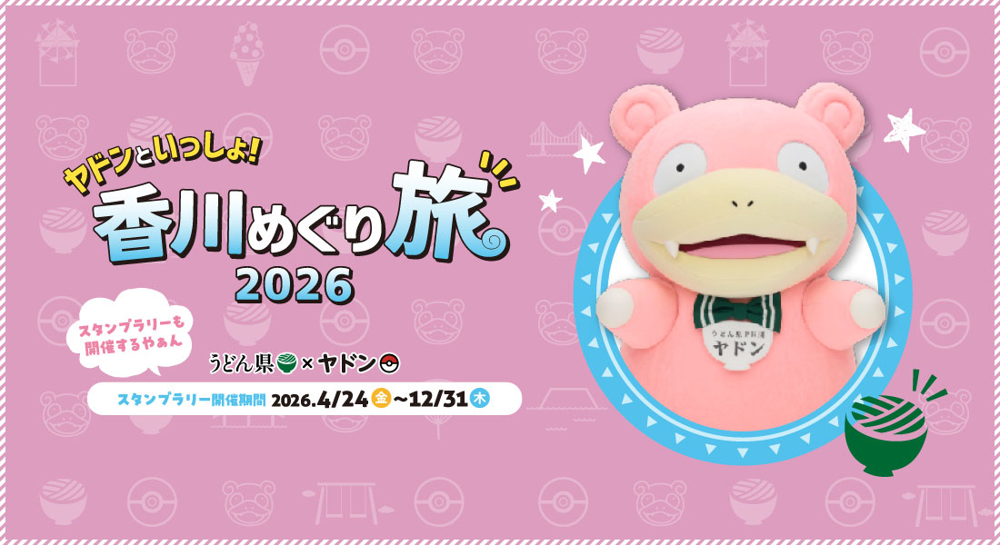
2026년 4월 24일부터 12월 31일까지 진행되어 이번 여행 기간에도 참여할 수 있어요. 공항이나 관광안내소에서 리플릿을 먼저 확인하세요.
참여 방법 보기 ↗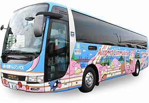
다카마쓰 공항과 시내를 잇는 래핑 버스입니다. 차량 점검이나 배차에 따라 일반 차량이 올 수도 있으니 만나면 행운의 첫 야돈으로 기록해보세요.
교통편 확인 ↗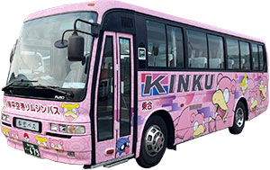
다카마쓰 시내와 고토히라·아야가와를 잇는 고토덴에 야돈 래핑 열차가 운행합니다. 리쓰린·고토히라로 이동하는 2일차 동선과 잘 맞으니 만나면 행운의 야돈으로 기록해보세요. 매편 고정은 아니라 배차는 당일 확인이 좋아요.
교통편 확인 ↗스탬프 랠리는 카가와 곳곳에 설치돼요. 아래 지도는 이번 3박 4일 동선에서 무리 없이 들를 수 있는 후보 위치입니다. 실제 스탬프 설치 지점·앱 방식은 공식 사이트에서 확인하세요.
공식 스탬프 설치 장소·참여 방법 ↗DAY 1 공항 버스 → DAY 2 고토덴 열차 → DAY 4 시내 우체통·맨홀 → 공항 피규어
이미지 및 캐릭터 자료: 야돈 파라다이스 in 가가와 공식 사이트 · ©Pokémon. ©Nintendo/Creatures Inc./GAME FREAK inc.
KAGAWA FOOD CHECKLIST
우동만 먹고 돌아오기엔 카가와의 맛이 너무 많아요. 일정 안에 자연스럽게 넣기 좋은 다섯 가지를 가격대와 주문 팁까지 모았습니다.
사진을 누르면 다카마쓰·구라시키의 구글 지도 검색이 열려요.탄력 있는 굵은 면이 주인공. 붓카케는 진한 소스를 부어 먹고, 가마타마는 갓 삶은 면에 달걀을 섞어 고소하게 즐겨요.
주문: 小(소) 한 그릇부터 · 튀김은 셀프
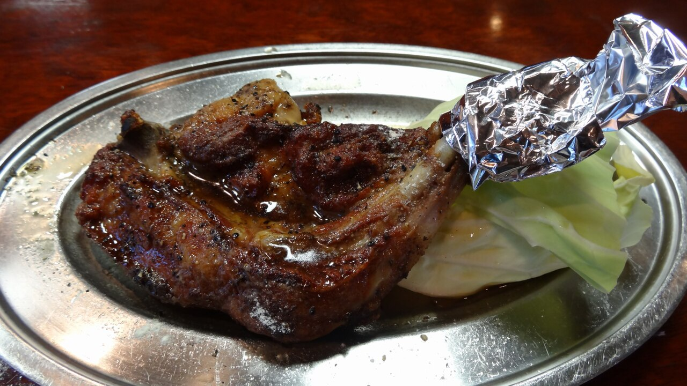
骨付鳥02통닭 다리에 마늘과 후추를 강하게 입혀 구운 카가와 대표 향토음식입니다. 부드러운 ‘와카도리(히나도리)’를 우선 추천하고, 씹는 맛과 진한 풍미의 ‘오야도리’는 호불호가 있어요. 주먹밥·양배추를 곁들이면 좋습니다.
첫 도전은 와카도리 · 잇카쿠는 화요일 정기휴무라 8.25(화)에는 화요일 영업 매장 사전 확인
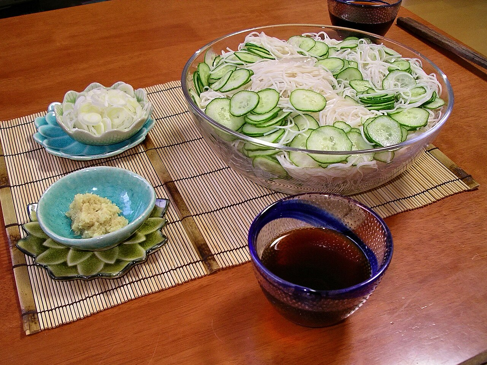
冷やしそうめん03가늘고 탄력 있는 면을 차가운 쯔유에 찍어 먹는 여름 별미입니다. 폭염 속 미관지구 야외 산책 뒤 시원하게 한 그릇 즐기기 좋아요.
미관지구 인근 식당 · 정기휴무·웨이팅 확인
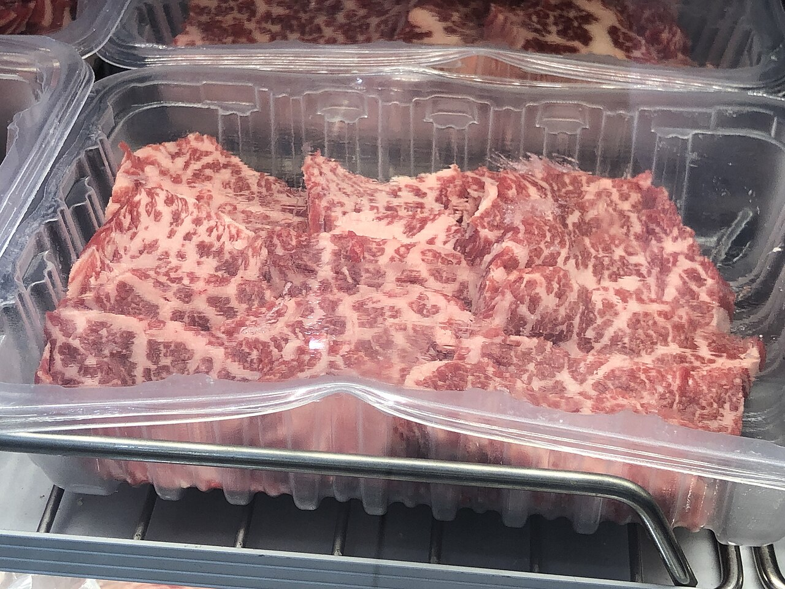
オリーブ牛04올리브 부산물을 섞은 사료로 키운 카가와의 브랜드 와규입니다. 스테이크나 야키니쿠로 주문하면 고소한 지방과 부드러운 육질을 느끼기 좋아요.
메뉴에서 ‘オリーブ牛’ 표기 확인
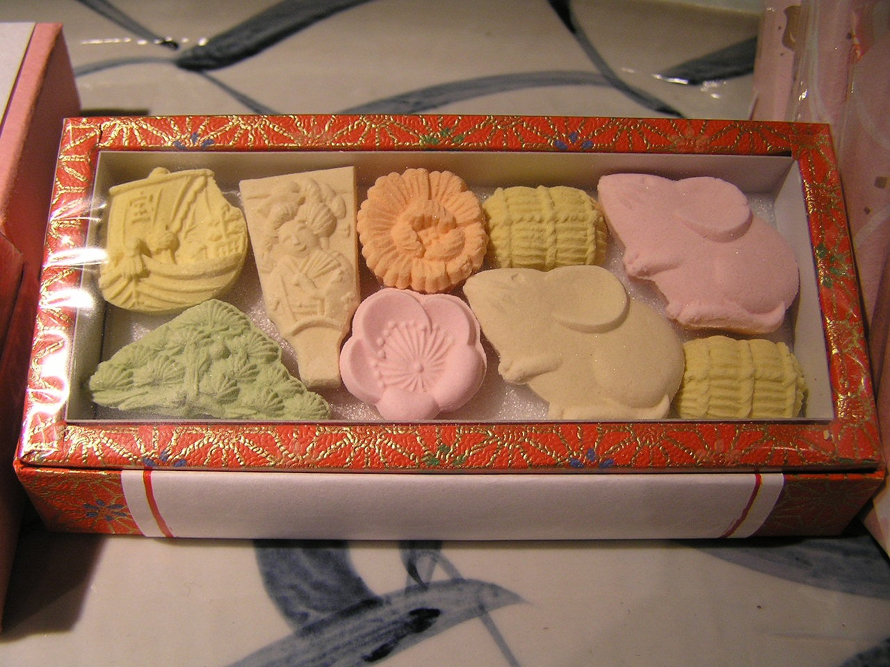
和三盆05카가와와 도쿠시마에서 전통 방식으로 만드는 고운 설탕입니다. 입안에서 사르르 녹는 작은 건과자와 양갱, 카스텔라로 만나볼 수 있어요.
상점가·공항에서 작은 상자 선물용 구매
첫날 저녁 호네츠키도리
둘째 날 고토히라 우동 점심 + 마루가메 호네츠키도리 저녁
셋째 날 구라시키 점심(냉소면 등)
마지막 날 우동 + 와산본 쇼핑 · 여유 있는 날 올리브 소고기
음식 사진: Wikimedia Commons 공개 라이선스 자료 · 가격은 매장과 메뉴에 따라 달라질 수 있습니다.
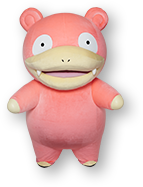
TAKAMATSU FASHION SHOPPING
숙소 주변에는 상점가형 쇼핑과 백화점이 가까이 모여 있어요. 취향과 남은 시간에 따라 한두 곳만 골라도 충분합니다.
2026년 7월 공식 입점·영업 정보 기준 · 휴무와 영업시간은 방문 전 재확인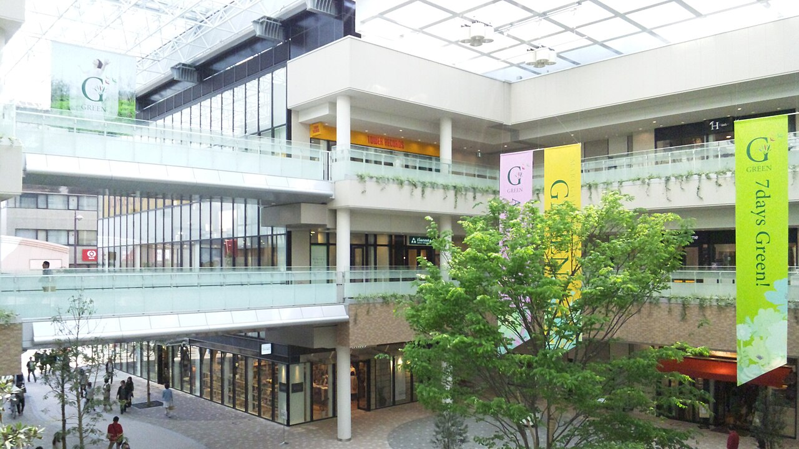
GOOGLE MAPS ↗丸亀町グリーン
다카마쓰 중심가에서 일본 브랜드를 비교하기 가장 편한 곳이에요. 상점가 산책과 식사까지 한 동선으로 이어져 여행 마지막 날에 넣기 좋습니다.
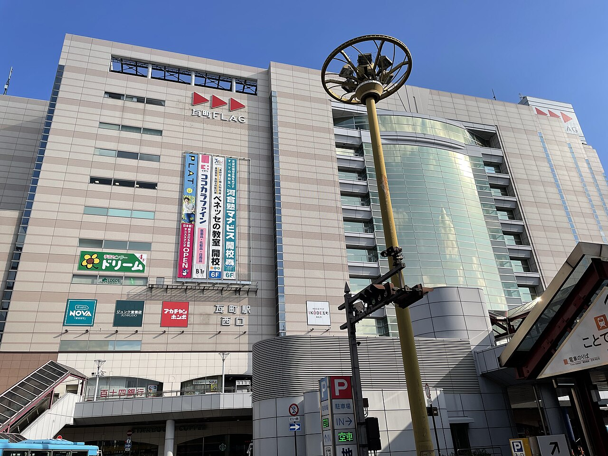
GOOGLE MAPS ↗瓦町FLAG
비가 오거나 한낮이 더울 때 특히 편한 역 연결 쇼핑몰입니다. 1–2층 패션 구역에서 남녀 캐주얼과 잡화를 빠르게 둘러볼 수 있어요.
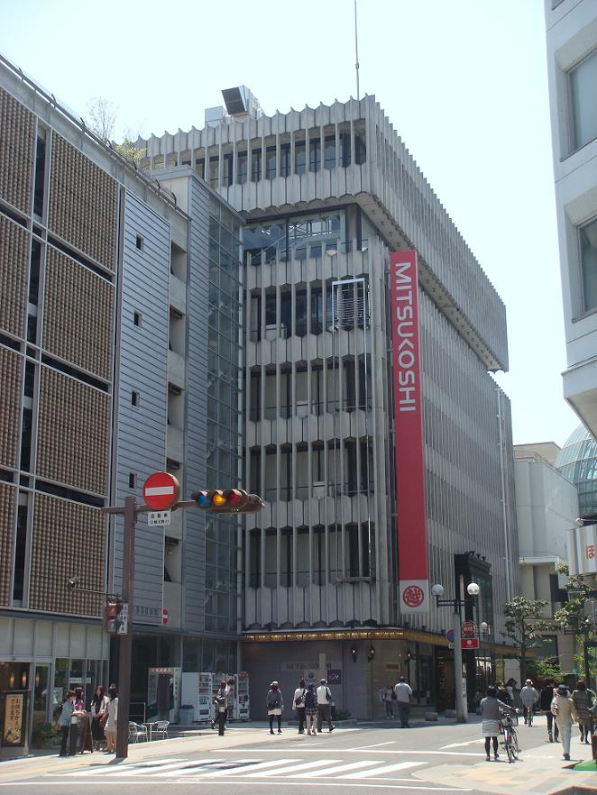
GOOGLE MAPS ↗高松三越
숙소와 가장 가까운 백화점으로, 조금 더 차분한 의류와 잡화·명품을 찾을 때 좋아요. 지하 식품관과 선물 쇼핑도 함께 해결할 수 있습니다.
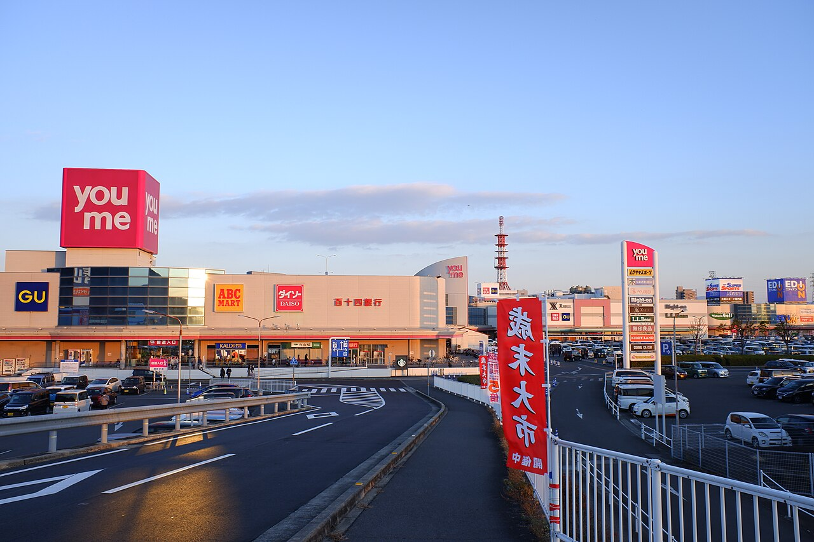
GOOGLE MAPS ↗ゆめタウン高松
시간을 넉넉히 잡고 대중적인 브랜드를 한 번에 비교하고 싶을 때 좋은 대형 쇼핑몰입니다. 일정이 빡빡하다면 시내 세 곳을 우선하세요.
시간이 1–2시간이면 숙소 → 미쓰코시 → 마루가메마치 그린
일본 캐주얼 중심이면 마루가메마치 그린 → 가와라마치 FLAG
반나절 쇼핑이면 유메타운 단독 방문
ESTIMATED BUDGET · 1 PERSON
항공권과 숙소는 결제한 금액, 나머지는 쿠폰북을 활용했을 때의 여유 있는 예상치입니다.
공항 리무진 왕복과 리쓰린 공원 입장은 쿠폰으로 절약하는 전제예요. 3일차 구라시키는 페리를 이용하지 않아 페리 쿠폰 절약은 없고, 대신 JR 왕복 철도비(마린라이너 왕복·약 ¥3,700)와 오하라미술관 입장료(성인 ¥2,000)가 현지 교통·입장 예산에 반영돼 있습니다.
SMART SAVING ROUTE
여행 기간은 ‘다카마쓰 웰컴 캠페인’ 대상 기간에 포함돼요. 약 4만 원 상당의 디지털 쿠폰을 일정 속에 자연스럽게 넣었습니다.
쿠폰 발급 화면·수령 방식은 도착 후 공항 인포메이션에서 최종 확인하세요. 링크는 참고용 공식 안내처입니다.다카마쓰 공항 안내 데스크에서 캠페인 대상·수령 방법을 확인하세요.
공항 리무진 왕복권을 활성화해 첫날과 마지막 날에 사용하세요.
리쓰린 공원 입장권은 2일차 아침에 사용하세요. 3일차 구라시키는 철도로 다녀와 페리권을 쓰지 않습니다.
사용 전 꼭 확인 캠페인은 2026년 8월 31일까지 운영되고 쿠폰은 9월 6일까지 사용 가능하다고 안내되어 있어요. 수량·대상 항공편·발급 조건은 출발 직전에 다시 확인하세요. 3일차 구라시키는 철도로 다녀와 페리 쿠폰은 사용하지 않습니다.
PACKING CHECKLIST · SUMMER
여름 다카마쓰(카가와)·구라시키(오카야마) 여행에 맞춘 준비물이에요. 항목을 탭하면 체크됩니다(브라우저에 임시 저장되지 않으니 출발 전 한 번 더 확인하세요).
USEFUL APPS
출발 전 미리 설치·로그인해 두면 편해요. 항목을 탭하면 체크됩니다(브라우저에 저장되지 않으니 참고용).
EMERGENCY CONTACTS
다카마쓰(카가와)·구라시키(오카야마)는 주고베 대한민국 총영사관 관할입니다. 번호를 누르면 바로 전화 연결됩니다. 공식 출처 · 확인 기준일 2026-08-06.
출처: 주고베 대한민국 총영사관 공식 안내(overseas.mofa.go.kr/jp-kobe-ko), 외교부 영사콜센터, 일본정부관광국(JNTO) Japan Visitor Hotline · 확인 기준일 2026-08-06. 번호·운영시간은 출발 전 재확인하세요.
KEEP IN MIND
8월의 카가와는 덥고 습해요. 물·양산을 챙기고 12–15시는 실내와 이동 중심으로.
구라시키행 마린라이너·특급은 세토대교를 건너 강풍·태풍 시 지연·운휴합니다. 출발 전 JR 운행 정보를 확인하고 위험하면 가지 않아요.
폭염이나 비가 심하면 구라시키 오하라미술관·상점·카페 등 실내 비중을 늘리고, 미관지구 야외 시간은 줄이세요.
교통카드가 편하지만 작은 우동집과 사찰 주변 상점은 현금만 받는 경우가 있어요.
PHOTO CREDITS
아래 사진은 위키미디어 커먼즈의 공개 라이선스 자료입니다. 각 저작자와 라이선스를 표기합니다.
우동 여권 이미지는 저작권 안전을 위한 원본 참고 일러스트입니다. 캐릭터 자료(야돈)는 ©Pokémon, ©Nintendo/Creatures Inc./GAME FREAK inc. · 야돈 파라다이스 in 가가와 공식 사이트.